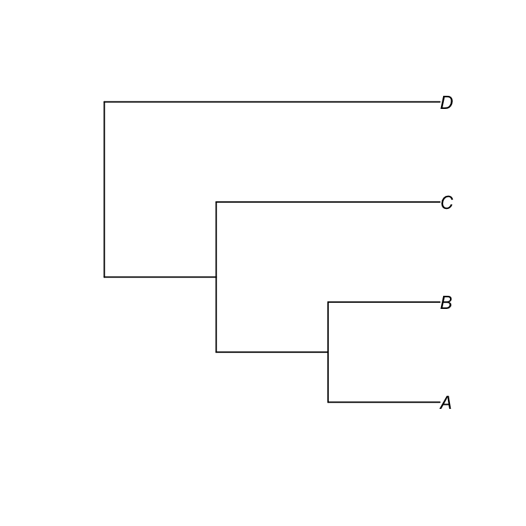

Coding trees, and getting your phylogeny into R
The most popular way of representing a tree is in a parenthetic (or “bracketed”) style known as the Newick format. For example, the tree below was produced by the following code:
tree1 <- read.tree(text="(((A,B),C),D);")
plot(tree1)
The object that is created with the read.tree command is stored in R as a phylo class object. This is the fundamental class of object used in phylogenetic analyses in R and we will investigate it more thoroughly later.
Where there is no edge length information Newick trees are clearly straightforward. You should be able to see the logic: A and B are “sister” species and are thus grouped within brackets, and together they are a sister group to C, and then the clade containing A, B and C are sister to D.
Where edge length information is also available there is the added complication of representing this information. However this is also straightforward: for Newick trees, the information is included in the bracketed text, after a colon. For example, the tree in the example below is topologically identical to the one in below but has additional edge length data:
tree2 <- read.tree(text="(((A:4,B:4):3,C:7):10,D:17);")
plot(tree2)
As with other objects in R, one can ask R to summarise the phylo object and doing so gives us some basic information such as the number of tips, nodes, and branch lengths.
summary(tree2)
#>
#> Phylogenetic tree: tree2
#>
#> Number of tips: 4
#> Number of nodes: 3
#> Branch lengths:
#> mean: 7.5
#> variance: 28.3
#> distribution summary:
#> Min. 1st Qu. Median 3rd Qu. Max.
#> 3.00 4.00 5.50 9.25 17.00
#> No root edge.
#> Tip labels: A
#> B
#> C
#> D
#> No node labels.As with other R objects, separate parts of the phylo object can be found by addressing them by name like this:
names(tree2)
tree2$edge
tree2$Nnode
tree2$tip.labelEach of the tree’s nodes is given a numeric label, which can be added to the plot using the nodelabels() command (figure below). The terminal nodes (species) are given the first numbers, then the internal nodes are numbered. These identifiers can be useful for certain manipulations as we will see later on.
tree2 <- read.tree(text="(((A:4,B:4):3,C:7):10,D:17);")
plot(tree2)
nodelabels()Importing trees from Newick format
It is not particularly desirable to have to type out trees in Newick format every time you want to anaylse them. Conveniently, you can also read in trees that are saved elsewhere, for example when produced by another program as a text file. When importing from a text file, each tree should be in a single line of text in Newick format. The read.tree function can read in multiple trees in this format, with each tree on a separate line. In this case, the object returned by R will be a multiphylo class object, which is a list that contains several phylo objects. Individual trees can be selected from the object using R’s standard indexing notation (e.g. my.trees.object[[1]], my.trees.object[[2]]).
CarnTree <- read.tree(file="data/carnivores.tre")
summary(CarnTree)
#>
#> Phylogenetic tree: CarnTree
#>
#> Number of tips: 267
#> Number of nodes: 266
#> Branch lengths:
#> mean: 5.923684
#> variance: 42.18426
#> distribution summary:
#> Min. 1st Qu. Median 3rd Qu. Max.
#> 0.0 1.1 3.9 8.6 51.8
#> No root edge.
#> First ten tip labels: Enhydra_lutris
#> Pteronura_brasiliensis
#> Lutrogale_perspicillata
#> Lutra_maculicollis
#> Lontra_felina
#> Lontra_provocax
#> Lontra_longicaudis
#> Lontra_canadensis
#> Lutra_lutra
#> Lutra_sumatrana
#> No node labels.One of the most popular file types in bioinformatics is the format, and most bioinformatics software can output and read these files. Nexus is also the file format used by the database. Nexus files are extensible and can contain a huge diversity of different data types, but we are primarily interested in the trees, which are stored in Newick format in the TREES block. The function read.nexus@ can read these files, ignoring everything but the TREE block, and extracting any trees that are contained in the file.
Here is an example of a Nexus file layout:
#NEXUS
BEGIN TAXA;
Dimensions NTax=4;
TaxLabels fish frog snake mouse;
END;
BEGIN CHARACTERS;
Dimensions NChar=20;
Format DataType=DNA;
Matrix
fish ACATA GAGGG TACCT CTAAG
frog ACATA GAGGG TACCT CTAAG
snake ACATA GAGGG TACCT CTAAG
mouse ACATA GAGGG TACCT CTAAG
END;
BEGIN TREES;
Tree best=(fish, (frog, (snake, mouse)));
END;Reading this data file into R using read.nexus is very straightforward.
nextree <- read.nexus("data/nexusexample.nex")
summary(nextree)
#>
#> Phylogenetic tree: nextree
#>
#> Number of tips: 4
#> Number of nodes: 3
#> No branch lengths.
#> No root edge.
#> Tip labels: fish
#> frog
#> snake
#> mouse
#> No node labels.